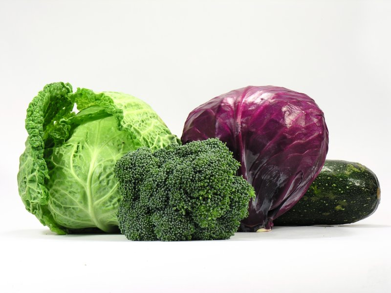

Odnośniki i obrazy
Odnośniki i obrazy są podstawowymi elementami stron internetowych. Dzięki nim możemy przechodzić między stronami oraz wyświetlać grafikę.
Odnośniki - <a>
Znacznik <a> (anchor) służy do tworzenia linków. Pozwala on przechodzić do innych stron internetowych lub do konkretnych miejsc na tej samej stronie.
Przykład linku zewnętrznego
<a href="https://www.google.com">Przejdź do Google</a>
Przykład linku w nowej karcie
<a href="https://www.google.com" target="_blank">Otwórz Google</a>
Link lokalny
<a href="index.html">Przejdź do kontaktu</a>
Obrazy - <img>
Znacznik <img> służy do wyświetlania obrazów na stronie. Jest to znacznik samodomykający.
Podstawowy obraz
<img src="obraz.jpg" alt="Opis obrazu">

Atrybuty obrazów
Najważniejsze atrybuty znacznika <img>:
- src – ścieżka do pliku graficznego
- alt – tekst alternatywny (ważny dla SEO i dostępności)
- width – szerokość obrazu
- height – wysokość obrazu
<img src="obraz.jpg" alt="Opis" width="300">
Link jako obraz
Możemy połączyć obraz i odnośnik, aby kliknięcie w obraz przenosiło na inną stronę.
<a href="https://www.google.com">
<img src="obraz.jpg" alt="Kliknij mnie">
</a>
Podsumowanie
Znacznik <a> odpowiada za nawigację po stronach, a <img> za wyświetlanie grafik. Połączenie tych dwóch elementów pozwala tworzyć interaktywne i atrakcyjne wizualnie strony internetowe.